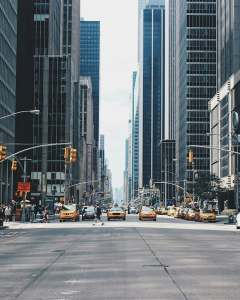
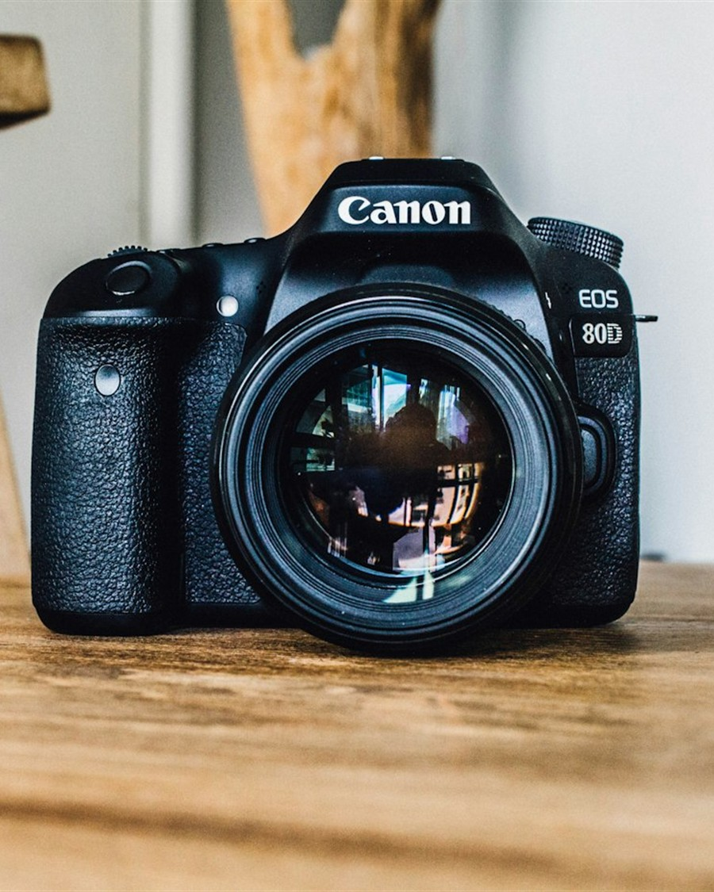
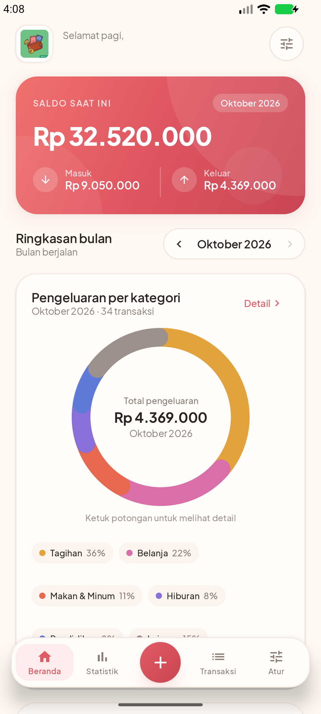
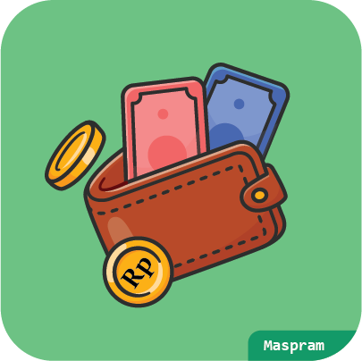
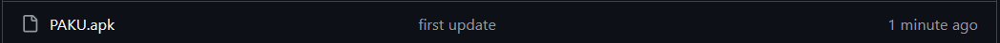
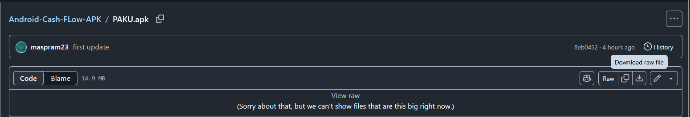
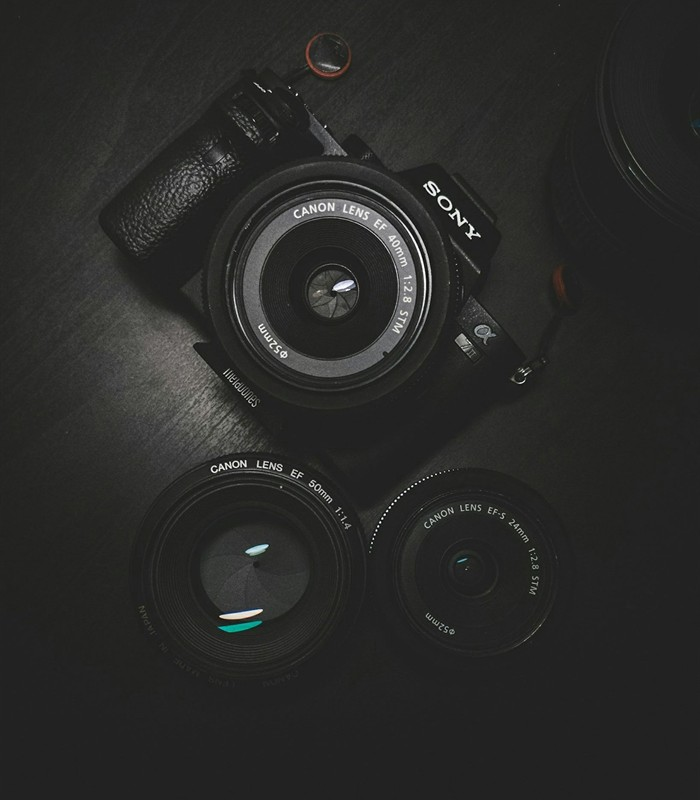

Fotografi
Potret, jalanan, lanskap, dan detail. Tersedia untuk sesi personal maupun brand.
Sigit Pramono · Fotografer & Developer
Saya Maspram. Menangkap cahaya lewat kamera, merakit ide jadi aplikasi, lalu membawanya pulang ke atas kaos dan poster.
Sekarang: Fotografer
atau mampir ke toko POD saya

01 Tentang

Mulai dari kamera pinjaman dan satu folder berisi file RAW. Sekarang saya menghabiskan hari-hari di antara tiga hal: mencari cahaya, menulis kode, dan mengemas karya jadi sesuatu yang bisa kamu pegang.
Bagi saya fotografi dan coding punya bahasa yang sama — komposisi, ritme, dan kesabaran menunggu momen yang tepat. Bedanya cuma satu: satu selesai dalam 1/250 detik, satu lagi dalam 250 baris.
Potret, jalanan, lanskap, dan detail. Tersedia untuk sesi personal maupun brand.
Landing page, portofolio, sampai aplikasi Android kecil yang benar-benar dipakai.
Desain kaos, poster, dan tote bag. Karya foto yang keluar dari layar.
Perangkat & alat
02 Galeri
Kumpulan bingkai yang saya pilih ulang. Klik salah satu untuk melihat versi besarnya — hitam putih dulu, warna belakangan.
12 bingkai
Lanskap · 2025
Potret · 2024
Jalanan · 2025
Lanskap · 2024
Detail · 2025
Jalanan · 2024
Potret · 2025
Lanskap · 2024
Detail · 2024
Jalanan · 2024
Lanskap · 2025
Potret · 2023
03 Aplikasi
PAKU lahir dari kebiasaan saya mencatat pengeluaran di notes HP. Sekarang jadi aplikasi Android yang rapi, cepat, dan sepenuhnya offline.


PencAtat Keuangan kamU
Pencatat arus kas pribadi dengan diagram donat dan grafik enam bulan yang bisa disentuh. Catat pemasukan dan pengeluaran, lihat ke mana uang pergi, lalu ambil keputusan tanpa perlu akun atau koneksi internet.
Tekan Unduh APK. Kalau browser bertanya, pilih tetap unduh.
Buka file PAKU.apk, lalu aktifkan “Instal dari sumber tidak dikenal” bila diminta.
Pilih mulai dari kosong atau dengan data contoh. Semua data tersimpan di HP-mu.

PAKU.apk.
Ini versi final PAKU. Karena dipasang langsung dari file APK (bukan lewat Play Store), Android mungkin meminta izin “Instal dari sumber tidak dikenal”. Aktifkan izin tersebut hanya untuk file yang kamu unduh dari situs ini.
Dibangun dengan Kotlin + Jetpack Compose. Data tersimpan lokal di perangkatmu.
04 Toko POD
Kaos, poster, dan tote bag dengan cetakan foto pilihan. Diproduksi on-demand, dikirim langsung dari percetakan ke tanganmu.
Preview koleksi — toko POD sedang disiapkan.
Heavy cotton 24s
Rp 149.000A2 matte paper
Rp 89.000
ToteCanvas 12 oz
Rp 119.00005 Kontak
Terbuka untuk sesi foto, pembuatan website, kolaborasi desain POD, atau sekadar ngobrol soal lensa dan kode.